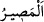
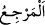
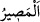
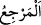
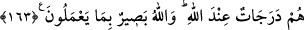

peygamberler ve peygamber gibi yaşayanlara benzer bir tarzda münkerleri terkedip
tâatleri îfâ ederek Allah’ın rızâsını kazanmaya çalışmak ve bu rızâya yönelmek
demektir.
Yani hiç Allah’ın rızâsına uyan; hıyânet gibi günahlar yüzünden Allah’ın hışmına
uğrayan, karşısında hiç kimsenin duramayacağı ilâhî gadaba uğrayan ve bunların hayat
tarzına benzeyen bir hayat süren ve Allah’ın gadabına uğrayıp da yeri cehennem olan
adam gibi olur mu? Maksat, bu iki zümrenin aynı olmayacağını göstermektir: “Ne kötü
sonuçtur orası!”
Dönüş yeri, sonuç anlamına gelen ( __WORD__ ) ve ( __WORD__ ) kelimeleri arasındaki fark ( __WORD__ )’in, kişinin önceki durumundan farklı bir konumda olması; ( __WORD__ )’de ise böyle
bir fark yoktur.
163. Onlar Allah katında derece derecedirler. Allah onların yaptıklarını
görmektedir.
O, Allah’ın rızâsına uyanlarla, gadabına uğrayanlar; Allah’ın hüküm ve ilminde farklı
farklı tabakalardadır. Bu iki zümre birbirinden zıd ve farklı durumlarda bulunmaları
açısından, aralarında -basamaklardan olduğu gibi- gerçek (zâtî) bir farklılık
bulunduğunu göstermek ve mübâlağa etmek için, derecelere benzetilmişlerdir. Mâsiyet
ve tâat amelleri açısından bütün insanlar, farklı farklıdırlar. Bu sebeple; “Her kim
zerre kadar hayır işlerse, onu görecektir. Kim de zerre kadar şer işlerse onu
görecektir.” (ez-Zilzâl, 99/7,8) âyet-i kerîmesi gereğince sevap ve ceza dereceleri
bakımından hiç kimse eşit olmaz. Âyet: “Onlar, derece sahibidirler.” mânasındadır.
“Allah, onların yaptıklarını;” amellerini ve derecelerini görmektedir. Onlara, bu
amellerine göre karşılık verecektir.
Gulûl (gizlice ganimet almak, hıyânet), büyük günahlardandır. Mal aşıran hâindir.
Nefis ve hevâsının bu kişiye galip gelmesi, bu kişinin temel karakterlerindendir.
Peygamberler ise, daima Allah’la birlikte olan, beşerî sıfatlardan uzak; rubûbiyet
sıfatlarıyla muttasıf; rezilâne davranışlardan, nefsânî sıfat ve şeytânî dürtülerden
korunmuş şahsiyetlerdir. Bu sayededir ki, hıyânet vb. şeylerin peygamberlerden sâdır
olması imkânsızdır. Bir peygamber, sıfat (ruhâniyet) cennetinde ve rıdvan
makamındadır. Hâin ise, nefis cehenneminde, hevâ çukurlarında bulunmaktadır. Bu
durumda hâin birinin hâli, peygamberlerin hallerine eşit olamaz. “Onlar derece
derecedirler.” buyurulmasının sebebi budur.
Öyle ise akıllı insanlara düşen, derecelerini tamamlayıp en güzel hallere ulaşmak için
çırpınmaktır.